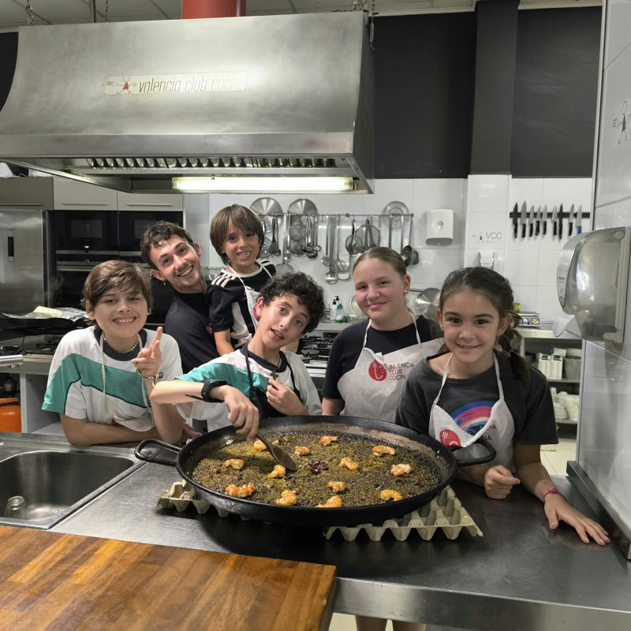
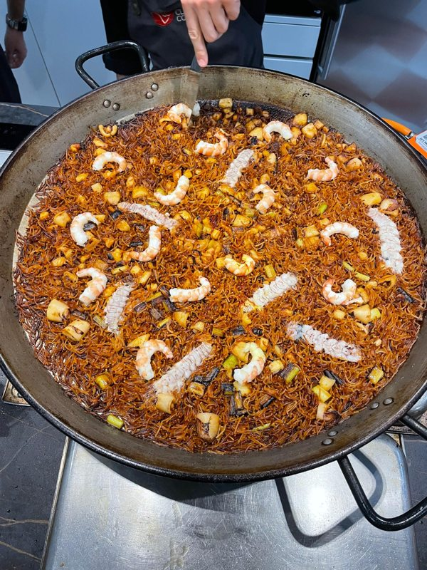
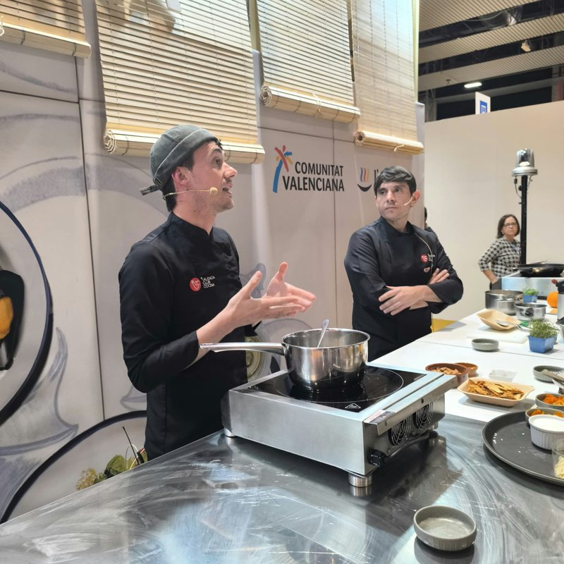
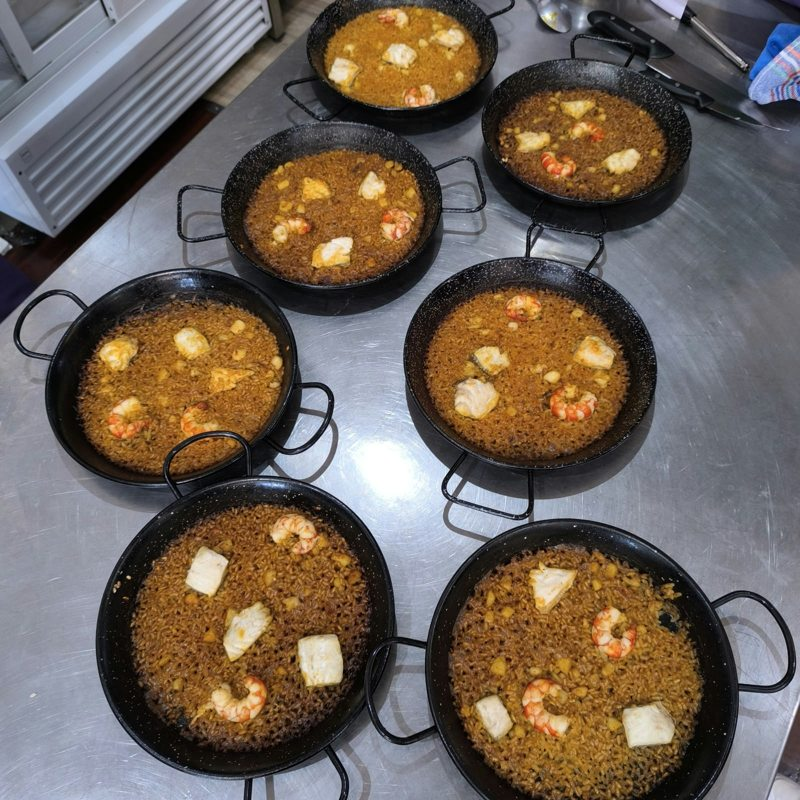
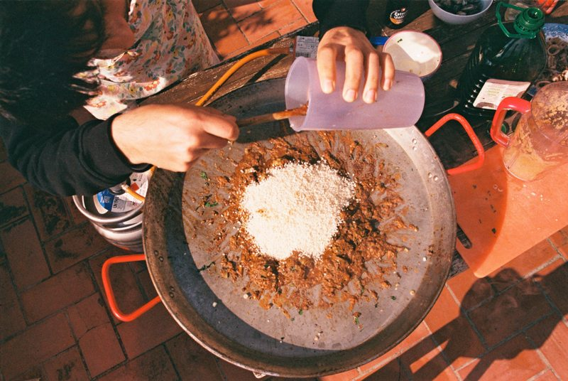
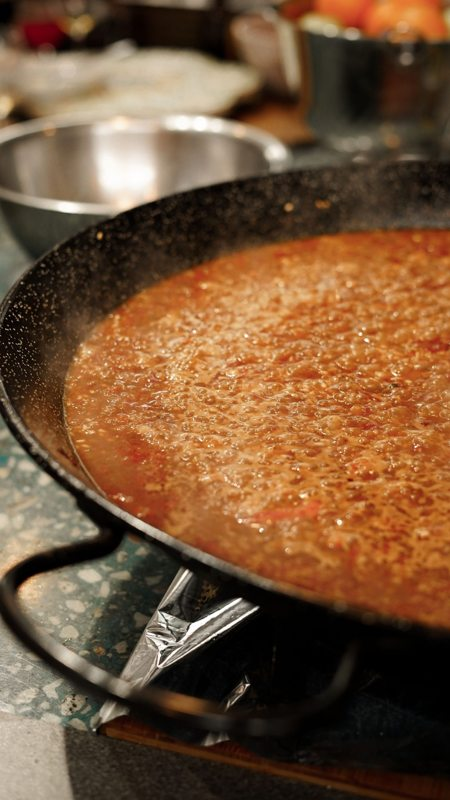
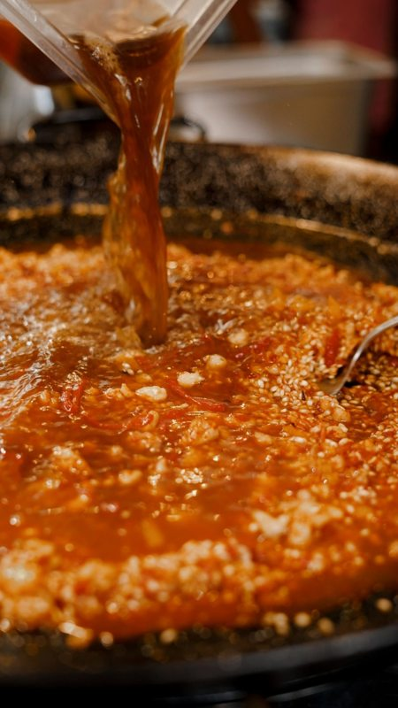
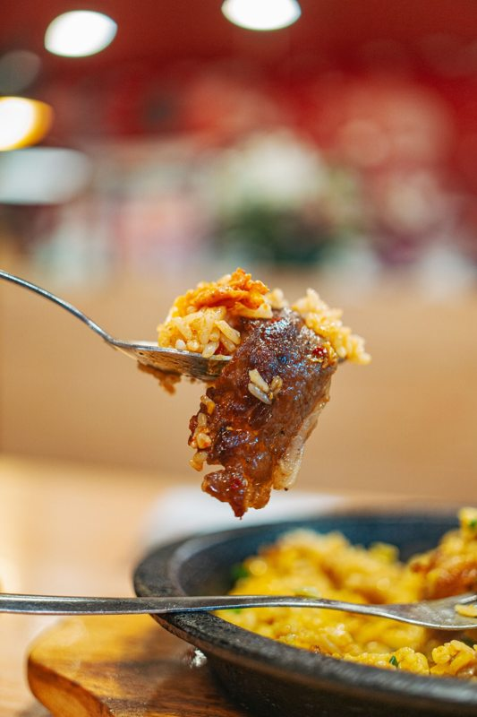
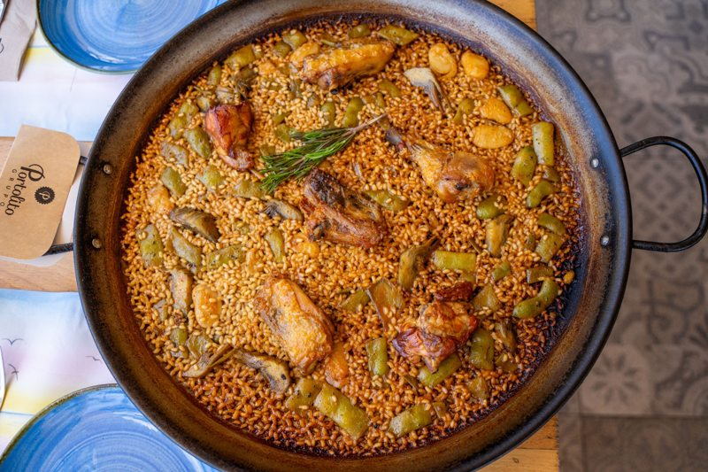

Gallery
Moments to share.
Rice, craft and moments to share. Explore our photographs and a selection of paella inspirations.
In our kitchens
The pleasure of teaching, cooking and sharing.








Around the paella
A selection of perspectives on the craft and flavours of rice.










Intimate or larger gatherings: guest counts by arrangement.
Let’s imagine your event ↗